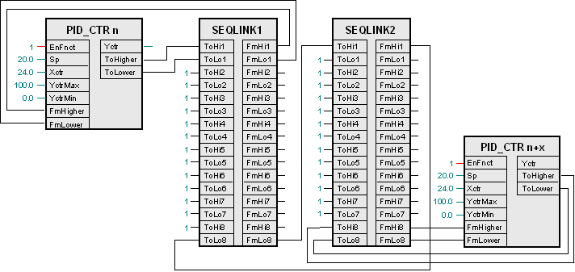

SEQLINK：序列链接器
块 SEQLINK (FB475) 有助于互连 PID_CTR 块。
功能性
PID_CTR 块的互连发生在 PID_CTR 块的引脚和 SEQLINK 块上的某个位置之间。

PID_CTR 块的序列必须与位置的序列匹配（SEQLINK 块中可能存在空闲位置）。

多个 SEQLINKs 可以串联互连。

输入
Pin | E | Description |
ToHi1..ToHi8 | pa | 到更高的相邻元素 1..8 |
ToLo1..ToLo8 | pa | 降低相邻元素 1..8 |
输出
Pin | E | Description |
FmHi1..FmHi8 | a | 从较高的相邻元素 1..8 |
FmLo1..FmLo8 | a | 从下邻元素 1..8 |
输入值
Pin | Description | Data type | Default value | E.g. Engineering unit or Text group | Min. | Max. |
ToHi1..ToHi8 | 到更高的相邻元素 1..8 | 记录 |
|
|
|
|
ToLo1..ToLo8 | 降低相邻元素 1..8 | 记录 |
|
|
|
|
输出值
Pin | Description | Data type | Default value | E.g. Engineering unit or Text group | Min. | Max. |
FmHi1..FmHi8 | 从较高的相邻元素 1..8 | 记录 |
|
|
|
|
FmLo1..FmLo8 | 从下邻元素 1..8 | 记录 |
|
|
|
|
子引脚：
Pin | Description | |
_CtlMod | 控制方式 多态 顺序控制器的操作模式。 | |
1（无效） 默认 | 引脚未互连。 | |
2（法案） | 顺序控制器已激活。 | |
3（关闭） | 顺序控制器被禁用。 | |
4（开） | 序列控制器已启用。 | |
_Crdn | 协调。 多态 顺序控制器的协调信号。 | |
1（无） 默认 | 引脚未互连（边界元素）。 | |
2（链接） | 顺序控制器通过SEQLINK互连。 | |
3（低） | 序列控制器元素的 [YctrMin] 侧。 | |
4 (ErrLow) | 顺序互连错误。 | |
5（法案） | 顺序控制器已激活。 | |
6（高） | 序列控制器元件的 [YctrMax] 侧。 | |
_Ctkn | 控制器令牌。 多态 控制器启用。 | |
1（无） 默认 | 引脚未互连（边界元素）。 | |
2（链接） | 顺序控制器通过SEQLINK互连。 | |
3（低） | 序列控制器元素的 [YctrMin] 侧。 | |
4 (ErrLow) | 顺序互连错误。 | |
5（法案） | 顺序控制器已激活。 | |
6（高） | 序列控制器元件的 [YctrMax] 侧。 | |
_IsInt | 积分器状态信号。 布尔值 有关顺序控制器元件积分操作的信息。 | |
0（否） 默认 | 非集成顺序控制器元件。 | |
1（是） | 集成顺序控制器元件。 | |
_DeltaE | 覆盖了比例部分的控制误差。 真实的 默认值 = 0.0 | |
过程响应
标准（参见General rules and information).
故障排除
标准（参见General rules and information).